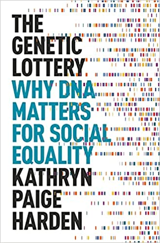

The Genetic Lottery, by Harden
Friday December 24, 2021
Harden has something for everyone to dislike, telling the left that environment isn't everything and telling the right that self-determination isn't everything. I think her recommendation to use genetic controls in statistical analysis is interesting but hard.
"The biggest contribution of genetics to the social sciences is to give researchers an additional set of tools to do basic research by measuring and statistically controlling for a variable—DNA—that has previously been very difficult to measure and statistically control for." (page 192)
The Genetic Lottery has received criticism. Here's Henn et al.:
"Ultimately, [Harden's] focus on genetics as a fundamental cause of social inequality reduces her version of social justice to benevolent paternalism."
I think Harden does a fair job of being clear that genetics can be a cause, but certainly not the only cause, and not a cause that can't be redressed. On “benevolent paternalism,” I think Henn et al. intend the phrase to have negative connotation, but couldn't any attempt at social justice (or social safety nets) be referred to in this way?
As in the “equality vs. equity” cartoon on page 162, I take it as a given that everyone should be able to see over the fence—the hard question is how high the fence that we're trying to get everybody over is. What's the level that should be guaranteed, and what are exceptions for extreme cases?
Bird has issues with the presentation of the science, and I agree I would have liked more detail and precision in the presentation, but Harden is also trying to reach a broad audience and cover a lot of material. I think Bird is incorrect in his accusation that Harden doesn't engage with the history of eugenics.
Harden's point that genetic confounds can affect optimal policy recommendations seems meaningful to me. If parents with lots of books in their home have kids who learn to read, does that imply giving everyone a stack of books is all we need to do?
I think Harden is right that if the well-intentioned don't engage with genetics, their impact is muted by confounding while the ill-intentioned advertise “forbidden knowledge” to the benefit of none. But I don't expect a major shift in Harden's lifetime.

"Building a commitment to egalitarianism on our genetic uniformity is building a house on sand." (page 19)
"A study of what is correlated with succeeding in an education system doesn't tell you whether that system is good, or fair, or just." (page 60)
Quoting the organizers of the Fragile Families Challenge:
“If one measures our degree of understanding by our ability to predict, then results ... suggest that our understanding of child development and the life course is actually quite poor.” (page 70)
"I think we must dismantle the false distinction between “inequalities that society is responsible for addressing” and “inequalities that are caused by differences in biology.”" (page 91)
Understanding and Misunderstanding Randomized Controlled Trials
Interesting unit: centimorgan
Heritability in the genomics era — concepts and misconceptions
"half of the additive genetic variance is between families and half is within families"
Personal genomes: The case of the missing heritability
Dang, I would like to see some worked examples for how heritabilities are calculated...
Individual Differences in Executive Functions Are Almost Entirely Genetic in Origin
"As Dostoevsky reminded us, “It takes something more than intelligence to act intelligently.”" (page 141, referring to Crime and Punishment)
Genetic analysis of social-class mobility in five longitudinal studies
In its conclusion, a sentiment shared by Harding:
"A long-term goal of our sociogenomic research is to use genetics to reveal novel environmental intervention approaches to mitigating socioeconomic disadvantage."
Genetically-mediated associations between measures of childhood character and academic achievement
In Figure 7.3 of the book, a list based on that ref:
- grit
- passion and perseverance for long-term goals
- growth mindset
- belief that intelligence is malleable
- intellectual curiosity
- desire to think about difficult or new problems
- mastery orientation
- motivation to learn for the sake of learning
- self-concept
- belief that one is smart and capable of learning
- test motivation
- trying hard on tests
"The SNPs correlated with non-cognitive skills were correlated with higher risk for several mental disorders, including schizophrenia, bipolar disorder, anorexia nervosa, and obsessive-compulsive disorder. This result warns us against viewing the genetic variants that are associated with going further in current systems of formal education as being inherently “good” things. A single genetic variant might make it a tiny bit more likely that someone will go further in school, but that same variant might also elevate their risk of developing schizophrenia or another serious mental disorder." (page 144)
"Unfortunately, the mistaken idea that genetic influences are an impermeable barrier to social change is also widely endorsed not just by those who are trying to naturalize inequality, but also by their ideological and political opponents." (page 155)
Strong genetic overlap between executive functions and intelligence
"I could quote the Bible verse from Thessalonians that was quoted to me as a child: “The one who is unwilling to work shall not eat.”" (page 212)
"There is no measure of so-called “merit” that is somehow free of genetic influence or untethered from biology." (page 247)